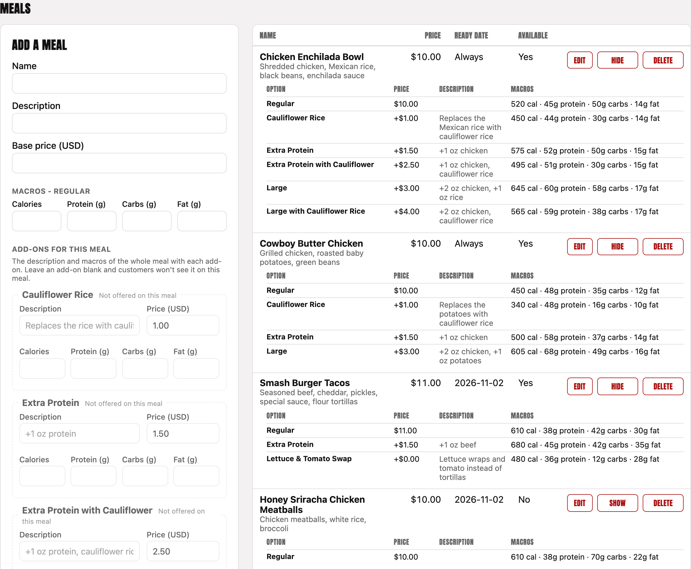
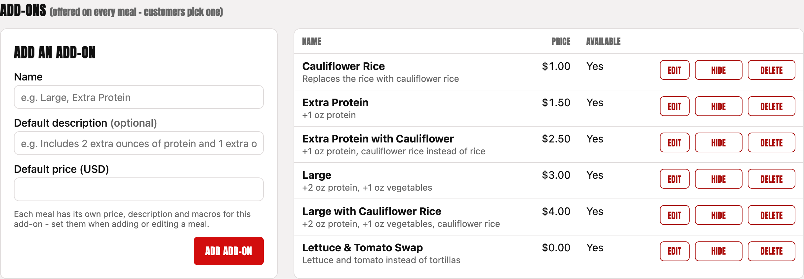
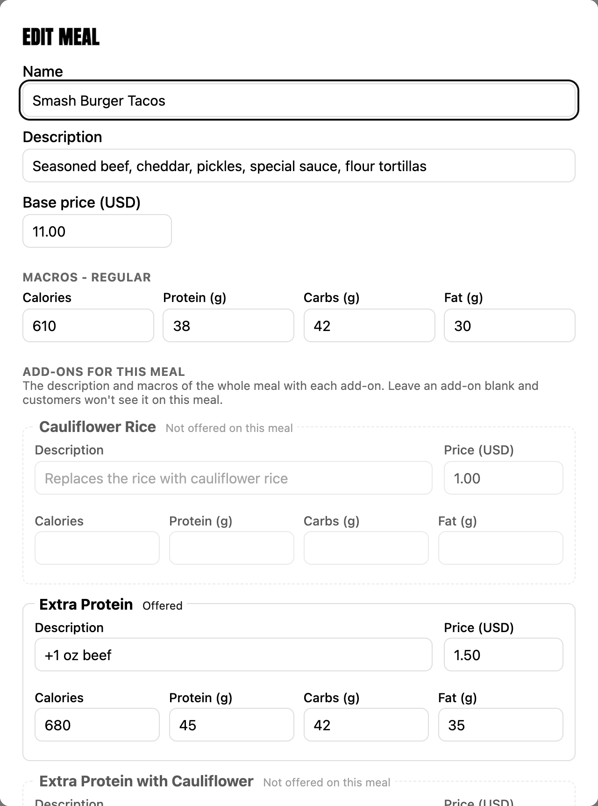
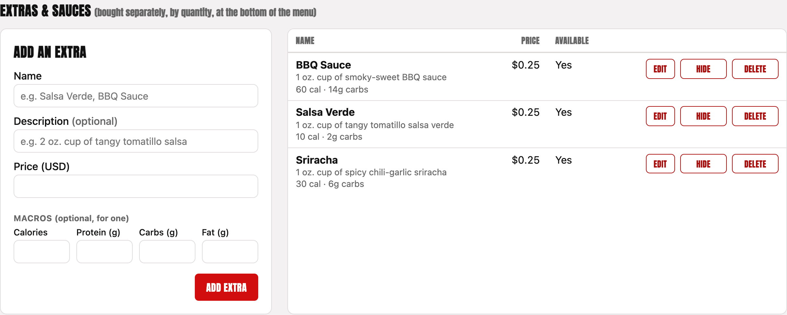
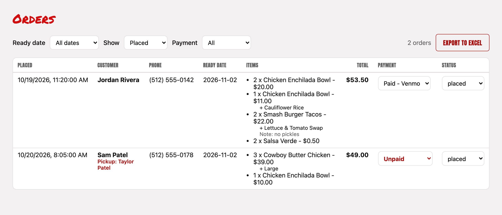
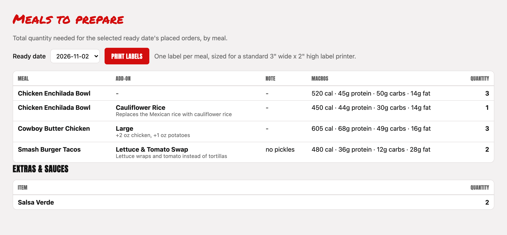
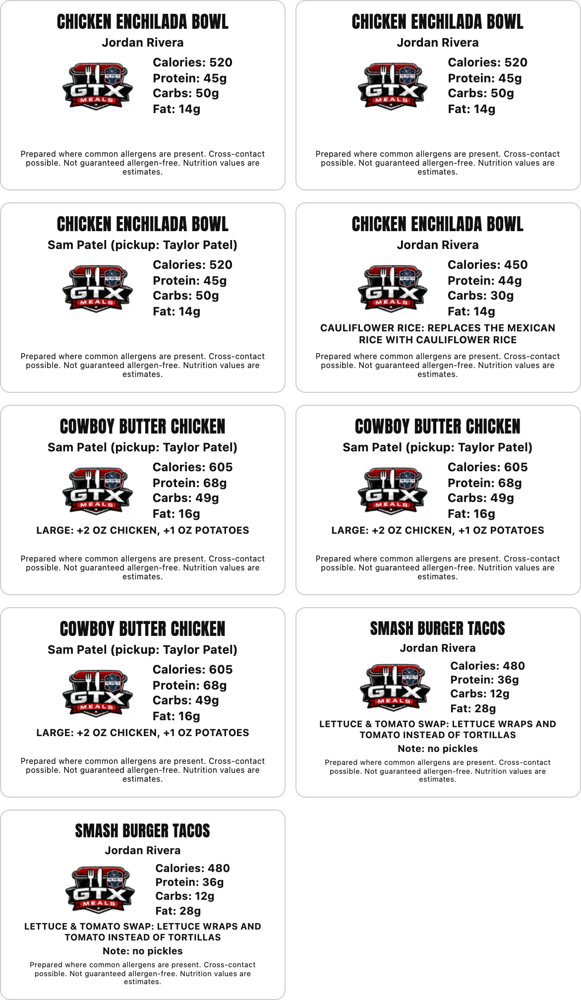
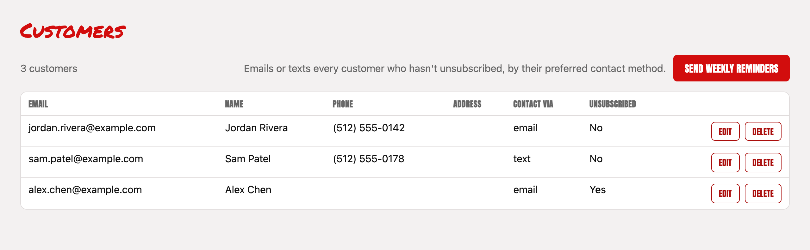
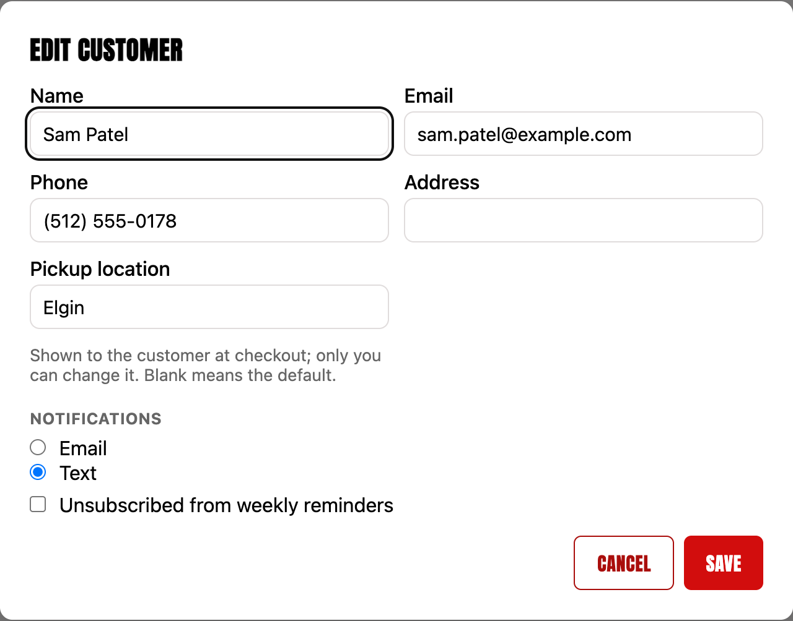
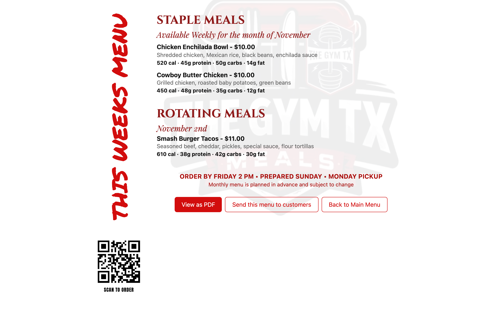

Automatic (on schedule) — the normal setting. Open Monday 11:00 AM to Friday 4:00 PM.
Forced open — opens ordering outside the schedule (e.g. you want to take a late order).
Forced closed — closes ordering, e.g. a holiday week or when you're full. Customers see an "Ordering Is Currently Closed" message and the Thursday reminder isn't sent.
The line under the menu (e.g. "Customers can order right now.") tells you the current state. Click Save after changing it.
Remember: after a forced open/closed week, set it back to Automatic.
Ready date
The pickup date for orders being placed now. It's automatic: the Monday after ordering closes.
For an unusual week (e.g. a Tuesday pickup after a holiday), pick the date under Different date this week and click Save. It only applies within 3 days of that week's Monday, so it can't accidentally carry over to later weeks. Clear goes back to automatic.
Customer emails use the real date, so a Tuesday pickup reads "Pickup Date: Tuesday, …" and the pickup reminder goes out Tuesday morning.
SMS reminders (texting)
Off. Texting needs a Twilio account to be set up first (ask your developer). While it's off:
The automatic messages (order emails, Thursday and pickup-day reminders) go by email to customers who prefer texts, so they don't miss them.
The manual Send weekly reminders and flyer Send buttons skip customers who prefer texts, and report how many were skipped.
4. Builder: meals

Add a meal (left) and the meals on the menu (right), with each meal's options underneath
Adding a meal
Fill in Name, Description and Base price.
Enter the regular meal's macros (calories, protein, carbs, fat).
Under Add-ons for this meal, fill in only the customizations this meal offers (see chapter 5).
Under Availability, either tick Staple (always on the menu), or pick the ready date it's offered for (a rotating meal).
Click Add meal.
Staple vs. rotating
Type
On the menu
Shown with
Staple
Every week.
⭐ star
Rotating
Only for the ready date you picked.
🔄 arrows
The star or arrows appear automatically from this setting — don't type them into the meal name.
Editing, hiding and deleting
Edit opens the meal for changes. Saving doesn't change orders already placed.
Hide takes a meal off the menu without deleting it (the list shows Available: No). Show puts it back.
Delete removes it for good. Past orders keep their copy of it.
Tip: Remove test meals (like "Tester") before their week opens — customers will see any meal that's available for the current ready date.
5. Builder: add-ons (customizations)
Add-ons are the options a customer can pick for a meal — one per meal — such as Cauliflower Rice, Extra Protein, Large or Large with Cauliflower Rice. Combinations are add-ons of their own.

The list of add-ons
Creating an add-on
Give it a Name, an optional Default description, and a Default price, then click Add add-on. A new add-on isn't offered on any meal until you fill it in on that meal.
Choosing which customizations each meal offers
In Edit (or Add a meal) every add-on has a box. A customization is offered on a meal only if you fill in its description or its macros for that meal. Leave a box blank and customers won't see that option on that meal.

Each box says Offered or Not offered on this meal as you type
The grey text in an empty description is just the add-on's default, as a hint — it isn't saved unless you type it.
Macros are for the whole meal with that customization (not just the extra part).
The price starts at the add-on's default; change it for this meal if needed.
Example — Smash Burger Tacos: create a "Lettuce & Tomato Swap" add-on. On the tacos, fill in the swap and leave the cauliflower rice boxes blank. The swap shows only on the tacos; cauliflower rice stays on every other meal that has it filled in.
Hiding and deleting an add-on
Hide stops offering it on every meal, but keeps it for later.
Delete removes it from the list (to avoid clutter). Meals keep their own copy, shown as "(deleted)" in the meals list; customers can't pick it.
6. Builder: extras & sauces
Extras (e.g. Salsa Verde, BBQ Sauce, Sriracha — $0.25 each) are bought by quantity at the bottom of the menu, on top of at least one meal.

Add one with a name, price, and optionally a description and macros (for one).
The description and macros show wherever the extra appears: the menu, the cart, My Orders, Orders and the Prep List.
Hide, Edit and Delete work like add-ons.
The current macros are estimates for a 1 oz. cup. Update them if your cups or recipes differ.
7. Orders

Finding orders
Ready date — one pickup date, or all dates.
Show — Placed (default), Prepared, Delivered, Cancelled, or All.
Payment — All, or Unpaid only.
Each order shows the customer, the person picking up (if someone else), phone, items with customizations, notes and extras, and the total.
Order status
Status
Meaning
placed
New order. The customer can still edit or cancel it until Friday 2:00 PM.
prepared
Cooked and labeled.
delivered
Picked up.
cancelled
Cancelled by the customer or by you. Not counted on the Prep List.
Change the status with the drop-down on the right.
Recording payments
Checkout doesn't take payment, so every order starts as Unpaid (shown in red). When a customer pays, pick Paid - Venmo, Paid - Cash or Free in the order's Payment drop-down — it saves right away.
Payment is separate from status: an order can be paid before or after it's prepared.
Customers see it on My Orders ("Payment received" or "Payment not received yet"), but only you can change it. No email is sent.
If a paid customer edits their order, the new order stays marked as paid. Check the total if their order grew.
Cancelling emails the customer. Setting an order to cancelled sends the customer the "Your Order Has Been Canceled" email (once). Other status changes send nothing.
Export to Excel
Click Export to Excel to download the orders currently shown (so set the filters first). The file opens in Excel, or use File → Import in Google Sheets.
Columns: Placed · Customer · Email · Phone · Pickup Location · Picked up by · Ready date · Status · for each meal: its quantity and its customizations (e.g. "2 Regular, 1 Large") · Extras & Sauces · Special Requests · Meals · Total ($) · Payment · Meal Suggestions. A Totals row at the bottom adds up each meal, the meal count and the money (cancelled orders are left out).
8. Prep list and labels

Pick the Ready date. The table totals every placed order for that date, grouped by meal, customization and note.
The Extras & Sauces table totals the sauce cups to portion.
Printing labels
Labels are made for SpartanIndustrial R011 sheets: 3" × 2" labels, 10 per letter-size sheet. There's one label per meal container, with the meal, the customer (and who's picking up), macros, the customization, any note, and the allergen statement.
Pick the ready date, then click Print labels.
In the print window (Chrome is recommended): Scale 100% (or "Actual size"/"Default"), Margins: Default, Headers and footers: off.
The first time, print one sheet on plain paper and hold it against a label sheet to check the alignment.
Load the label sheets and print.

A label sheet (sample data)
Label order: grouped by meal (A–Z), then customization (Regular first), then note, then customer — so containers come off the printer in plating order.
Long text shrinks automatically to fit the label.
Labels only print for the selected ready date.
9. Customers

Editing a customer
Click Edit on a customer.

Name, email, phone, address — their contact details. Emails go to this address.
Pickup location — only you can set this (customers see it at checkout but can't change it). Leave it blank for the normal Georgetown pickup at The Gym TX. Enter something like "Elgin" — or more detail, e.g. "Elgin – 123 Main St, 5–6 PM" — and that text replaces the Georgetown address in their emails, at checkout and in the Excel export.
Notifications — email or text (texts need texting switched on; until then their automatic messages come by email).
Unsubscribed — stops reminders and menu announcements (order emails still go out). Customers can also unsubscribe from the link in any reminder.
Deleting a customer
Delete removes their login and saved details. Their past orders are kept.
Send weekly reminders (button)
Sends a short "This week's menu is up" message to every subscribed customer now (texting customers are skipped while texting is off). The Thursday reminder is automatic; this is for an extra nudge.
10. Menu flyers
From the Menu page, use View this week's menu or View this month's menu.

The weekly menu flyer (with macros). The monthly one lists the month's meals without macros.
View as PDF — opens the print window; choose "Save as PDF" to post or share it.
Send this menu to customers — previews the message (a link to the flyer) and how many customers it'll go to; Send emails (or texts) every subscribed customer. While texting is off, customers who prefer texts are skipped.
The QR code links to the menu — handy on a printed flyer at the gym.
11. Automatic emails and texts
To customers
Message
When
Notes
Thank You for Your Order!
Right after they order
Their meals, customizations, notes, extras, total, pickup date and location, and payment reminder (Venmo @lgraffeo88).
Your Order Has Been Updated!
When they save an edited order
The new order and total. Starting an edit doesn't send a cancellation.
Your Order Has Been Canceled
When they cancel, or you set the order to cancelled
What was cancelled, and to email gtxmeals@gmail.com if they've paid.
Don't Forget to Order Your Meals!
Thursday 6:00 PM
Only customers who haven't ordered for this week and haven't unsubscribed. Skipped when ordering is forced closed.
Your Meals Are Ready for Pickup!
7:00 AM on pickup day
Only customers with an order for that day. Shows their pickup location.
Messages greet customers by first name.
Customers with no pickup location get the Georgetown address and hours (8:00 AM–1:00 PM or 3:30–6:30 PM); others get their own location and "Please follow your confirmed pickup instructions."
Replies go to gtxmeals@gmail.com.
Nobody gets the same reminder twice, even if a send is retried.
To you (gtxmeals@gmail.com)
New Meal Order Received!, Meal Order Updated, Meal Order Cancelled — when a customer places, edits or cancels. Includes the customer, items, total, phone, pickup location, who's picking up and any meal suggestions.
You aren't emailed for changes you make yourself.
Changing the wording: the address, hours, Venmo handle and sign-off are kept in one place in the app — ask your developer to update them.
12. Alerts and the monthly budget
Alert emails
The site watches itself. If something goes wrong you'll get an email from GTX Meals Alerts <alerts@gtxmeals.com>, and another when it's fixed.
Alert
What it means / what to do
The website is down / The API is down
The site or ordering didn't respond for 30 minutes (checked every 15 minutes). Try the site yourself; contact your developer if it stays down.
The API crashed / Errors in the API logs
Something failed — often one email that couldn't be delivered. The alert includes the details; forward it to your developer if it repeats.
The API is close to timing out / being throttled
The site was slow or very busy. Usually clears on its own.
The database had errors
A brief problem on Amazon's side. Usually clears on its own.
Too many emails are bouncing
Over 5% of emails bounced — check the Customers page for mistyped addresses.
Unusually many emails sent today
Over 300 emails in a day (normally about 30 a week). Check for something sent twice.
Monthly budget
Amazon Web Services emails gtxmeals@gmail.com if the monthly bill is forecast to go over $20, or actually reaches 80% and 100% of it. Normal running costs are well under that.
13. Troubleshooting
Problem
Try this
A customization doesn't show on a meal
Edit the meal: the add-on's box must have a description or macros (it should say Offered). Also check the add-on isn't hidden.
A new add-on shows on no meals
That's expected — fill it in on each meal that should offer it.
A meal isn't on the menu
Check it's available (not hidden) and either a staple or set for the current ready date (shown on the Builder's Ready date card).
Customers say ordering is closed
Check the Builder's Ordering card. Outside Monday 11 AM – Friday 4 PM it's closed unless forced open.
Labels print too small or misaligned
Print from Chrome at 100% / Actual size, Margins: Default. Test on plain paper first.
A customer didn't get an email
Check their email address on the Customers page; ask them to look in spam. Reminders don't go to unsubscribed customers (order emails always do).
A customer wants to change their order after Friday 2 PM
They can't online. Make the change by hand: cancel their order on the Orders page (they'll be emailed) and note the new order, or adjust on prep day.
A customer wants a different pickup location
Set it on the Customers page (Edit → Pickup location). Only you can change it.